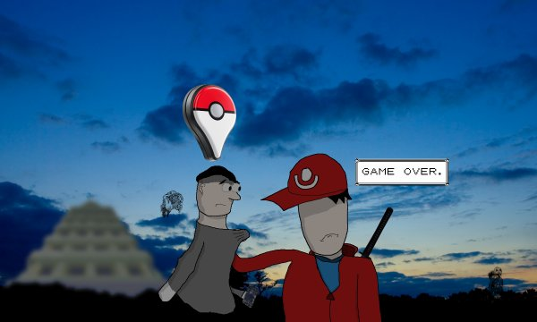
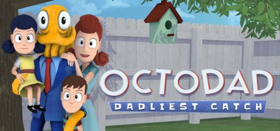
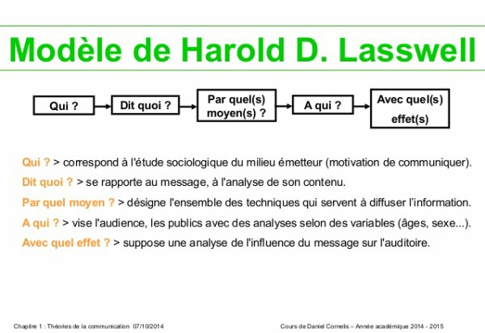
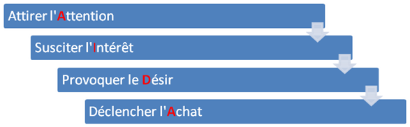
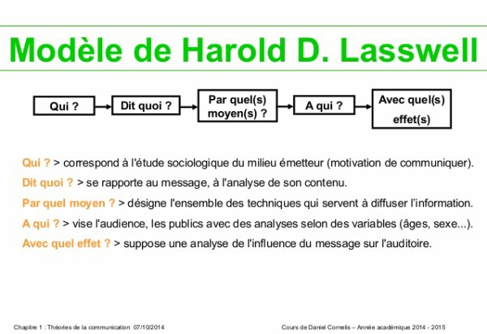
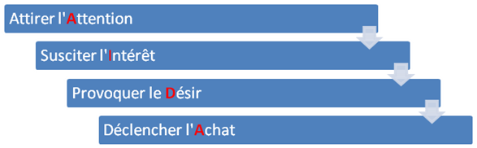

![[ANA JDG] Asterix and the Great Rescue - Megadrive](../vi/6oUXi0ckLmA/default.jpg)
![[ Présentation pour la chaîne Grenier des Joueurs ] JDG Prod](../art/SHAR.6419.583.2.jpg)


Comme vous le savez, depuis le début de 2017, le parti de la France Insoumise a décidé de se modernisé et de bien ciblé son probable électorat: Les jeunes.
Jean-Luc Mélenchon est au courant que les jeunes croient que voter ne sert à rien à cause des faux espoirs qu'ont fait les précédents présidents
(dont dernièrement "François Hollande"). Grace à son obstination de se rapprocher de son potentiel électorat, il est aller les chercher sur YouTube, Twitter,... se permettant même le luxe d'aller commenter des vidéos à son sujet comme ferait un YouTubeur de moins d'un million d'abonné!
Rendez-vous compte que absolument TOUT LES REMIX ET CHANSON ayant pour sujet sa personne ont été partagé sur son Facebook,son Twitter et ont été commenté sur YouTube.
Il s'attire la sympathie des internautes et augmente ainsi son nombre d'abonné et de follower!
Mais ça, c'est pour montrer à tout les autres partit plus "traditionnels" (l'enculage politique à la bonne franquette) qu'il pèse dans le game,qu'il a de l'intérêt, qu'il est prêt à devenir président!
Maintenant,il faut aussi que les gens lisent sont programmes mais là aussi il modernise et change son approche pour éviter de se prendre des vents. Et je vais vous offrir des liens vers tout ces médias car c'est énorme:
La BD (oeuvre citoyenne,pas directement le parti):
https://blogs.mediapart.fr/olivier-tonneau/blog/270217/lavenir-en-commun-la-bande-dessinee-debut
Résumé du programme de Mélenchon en dessins !
(vidéo citoyenne,pas directement le parti):
https://www.youtube.com/watch?v=_r5T_oS7-N0&feature=youtu.be
POURQUOI JE NE VOTERAI PAS MÉLENCHON
(vidéo citoyenne ET UTILISANT L'IRONIE...l'humour):
https://www.youtube.com/watch?v=2vwMWHTSpqU
MÉLENCHON - CLIP OFFICIEL : 1 AN APRÈS L'ÉLECTION, CE QUI A CHANGÉ
(vidéo de la France Insoumise pour résumer le programme):
https://www.youtube.com/watch?v=Z6wIDOUDkao
MÉLENCHON : MULTI-MEETING EN HOLOGRAMME - #LaForceDuPeuple
(un live sur YouTube qui a permis à Mélenchon de mettre des points au clairs et tenter de motiver les hésitants):
https://www.youtube.com/watch?v=_oqWpFFS8dI
LA FORCE DU PEUPLE Mélenchon
(Le programme de Mélenchon en PDF):
https://avenirencommun.fr/app/uploads/2017/04/170404_programmeCourt_final.pdf
La version audio du programme:
https://fichiers.jlm2017.fr/owncloud/index.php/s/BK1YTblc0HxxwR3/download
Le site l'Avenir en commun
(le site qui permet d'obtenir des versions thématiques du programme et autres joyeusetés autour de celui-ci):
https://avenirencommun.fr/avenir-en-commun/
Franchement, tout ça pour connaître les changements qu'il va faire...si il les respectent pas, on pourra facilement connaître tout ce qu'il n'a pas fait et les lui faire savoir rien que pour l'empêcher de ne pas être ré-élu! Il se mets en danger le Mélenchon, espérons qu'il soit élu pour qu'on puisse encore une fois dire que la politique c'est de la merde et que tout les politiciens sont des vendus hypocrites bourrés de frique...ou alors il fera exception et on pourra enfin dire que la malédiction présidentielle Française est terminée!
Merci d'avoir lu cet article et n'oublier pas #JLM2017
KidpaddleetcieGlin
Description :
Le Blog d'une personne aillant découvert internet en 2007 qui partage une partie de sa vie mais surtout ses réflexions, ses découvertes et ses cours!
Bon, je ne vous garantit pas que 100% du contenu est fiable mais aux moins je l'approuve! :)
N'oubliez pas de me retrouver sur les autres sites internet du réseaux KidpaddleetcieGlin retrouvable dans le premier article de chaque page. ^-^
Bon, je ne vous garantit pas que 100% du contenu est fiable mais aux moins je l'approuve! :)
N'oubliez pas de me retrouver sur les autres sites internet du réseaux KidpaddleetcieGlin retrouvable dans le premier article de chaque page. ^-^
Je bosse actuellement pour la chaîne Grenier des Joueurs
Son morceau préféré
Retour au blog de KidpaddleetcieGlin
Alors, c'est un peu compliquer à admettre mais la musique que vous faîtes avec un simple instrument avec tout le matériel d'enregistrement nécessaire c'est pas facile et c'est souvent de mauvaise qualité (j'en ai fais les frais!) .
Soyons sérieux deux minutes,que vous faîtes de la flûte,du djembé, du tambour,
du tam-tam, de la flûte de paon,... il va vous falloir l'instrument mais aussi un microphone suffisamment performant (TU SAIS OÙ TU PEUX TE LE METTRE TON SMARTPHONE?!) et un logiciel d'enregistrement comme Audacity!
Franchement,à part si vous voulez en vivre, ce n'est pas intéressant de dépenser du sang de travail pour quelques compositions musicales.
La meilleur des idées est de trouver un synthétiseur (si vous êtes bon en piano, vous êtes à l'aise) mais les synthétiseurs sont souvent payants donc...il faut faire de la composition.
Qu'est-ce que de la composition? C'est un procédé qui demande juste des parties de musique et un logiciel de montage/traitement musicale.
Sur https://www.looperman.com/ vous retrouverez des boucles gratuites pour commencer à faire vos compositions.
N'oublier pas les bonnes vieilles notions mathématiques car toutes ces boucles ont une durée différents et si vous arrivez à les synchronisés vous obtenez des rythmes différents!
N'oublier pas que l'art musical est d'abord un jeu et qu'en faire son métier demande à se soumettre aux règles du grand marché de distribution et du droit d'auteur. Looperman.com offre gratuitement des boucles musicales libre de droits MAIS ne vous permettra pas d'aller loin dans l'optique de faire de la composition musicale votre profession.
Il faudra apprendre à modifier ces loops, de créer vos propres loops, de mixer vos loops, de savoir changer le style de vos arrangements et aussi de vous trouver du bon matos pour faire tout ce que j'ai citer ici. Le hardware est coûteux, le travail onéreux et vos oreilles commencent à siffler une fois que vous y travailler plus de 5h.
Maintenant, ce genre de technique qui est à la fois peu coûteux
(un PC,une connexion à internet, un peu de mémoire et du temps libre suffisent)
et amusant
(on aime se dire qu'on a été fait à l'image de Dieu et qu'on est des créateurs...ON SE SENT TELLEMENT HUMAIN!), donc vous pouvez vous y essayer sans soucis politique,économique ou encore éthique!
Je tiens à vous conseiller le logiciel Audacity afin de vous initier aux logiciels de composition audio, il est plutôt simple à utiliser et,parce que c'est un gratuiciel,beaucoup de gens en ont fait des tutorielles. http://audacity.fr/telecharger-audacity-windows/
Avant de vous quitter,et de vous laissez remplir un énorme dossier de loops sur Looperman.com, je tiens à dire qu'un bête bruit peut devenir un élément intéressant pour une musique, le tout est de savoir l'harmoniser de lui donner un sens à un arrangement.
Voili,voilou, c'est tout! :D
Soyons sérieux deux minutes,que vous faîtes de la flûte,du djembé, du tambour,
du tam-tam, de la flûte de paon,... il va vous falloir l'instrument mais aussi un microphone suffisamment performant (TU SAIS OÙ TU PEUX TE LE METTRE TON SMARTPHONE?!) et un logiciel d'enregistrement comme Audacity!
Franchement,à part si vous voulez en vivre, ce n'est pas intéressant de dépenser du sang de travail pour quelques compositions musicales.
La meilleur des idées est de trouver un synthétiseur (si vous êtes bon en piano, vous êtes à l'aise) mais les synthétiseurs sont souvent payants donc...il faut faire de la composition.
Qu'est-ce que de la composition? C'est un procédé qui demande juste des parties de musique et un logiciel de montage/traitement musicale.
Sur https://www.looperman.com/ vous retrouverez des boucles gratuites pour commencer à faire vos compositions.
N'oublier pas les bonnes vieilles notions mathématiques car toutes ces boucles ont une durée différents et si vous arrivez à les synchronisés vous obtenez des rythmes différents!
N'oublier pas que l'art musical est d'abord un jeu et qu'en faire son métier demande à se soumettre aux règles du grand marché de distribution et du droit d'auteur. Looperman.com offre gratuitement des boucles musicales libre de droits MAIS ne vous permettra pas d'aller loin dans l'optique de faire de la composition musicale votre profession.
Il faudra apprendre à modifier ces loops, de créer vos propres loops, de mixer vos loops, de savoir changer le style de vos arrangements et aussi de vous trouver du bon matos pour faire tout ce que j'ai citer ici. Le hardware est coûteux, le travail onéreux et vos oreilles commencent à siffler une fois que vous y travailler plus de 5h.
Maintenant, ce genre de technique qui est à la fois peu coûteux
(un PC,une connexion à internet, un peu de mémoire et du temps libre suffisent)
et amusant
(on aime se dire qu'on a été fait à l'image de Dieu et qu'on est des créateurs...ON SE SENT TELLEMENT HUMAIN!), donc vous pouvez vous y essayer sans soucis politique,économique ou encore éthique!
Je tiens à vous conseiller le logiciel Audacity afin de vous initier aux logiciels de composition audio, il est plutôt simple à utiliser et,parce que c'est un gratuiciel,beaucoup de gens en ont fait des tutorielles. http://audacity.fr/telecharger-audacity-windows/
Avant de vous quitter,et de vous laissez remplir un énorme dossier de loops sur Looperman.com, je tiens à dire qu'un bête bruit peut devenir un élément intéressant pour une musique, le tout est de savoir l'harmoniser de lui donner un sens à un arrangement.
Voili,voilou, c'est tout! :D
C'est partit pour Boule et Bill 2 que j'ai vu le 12 Avril 2017 tout seul (c'est toujours bon à préciser).
N'ayant pas vu le premier Boule et Bill et n'ayant JAMAIS vu de film live tiré de bande-dessiné, je me suis dit:
"-Je connais Boule et Bill,je sais que c'est un univers réaliste mais pas aussi bien exploité que ça donc j'espère que ce film va montrer plus que ce qu'on peut voir dans la BD!"
Bon,j'avais la grosse tête (mais la mauvaise...en référence à un album de Spirou et Fantasio) et ne voulant pas me spoiler le synopsis, je n'ai rien regarder dessus avant!
Que fût ma déception quand film m'a dévoilé son scénario:
Le père a une nouvelle éditrice qui n'aime pas le bonheur alors il va tout faire pour vivre malheureux afin de trouver des nouveaux scénarios pour ses BD mais à la fin il se rend compte que le malheur c'est mal et que le bonheur c'est bien.
Un beau deus ex machina à la fin avec l'éditrice qui est sous les décombres de la cuisine de la maison de Boule...elle n'est pas morte (dommage) elle a juste une jambe cassé et le voisin va la sauver et donc elle en tombe follement amoureuse et elle trouve que le bonheur c'est bien.
La morale du film: Le mal ce n'est pas bien et c'est pas rigolo mais malaisant (comme le film)!
Bien sur, il y a deux histoires en une: La connerie du père et la jalousie de Boule pour un nouveau dans sa classe mais...c'est du déjà vu et il n'y a pas vraiment de phase où un des personnages prend pour son grade dans le sens où ils évoluent.
Ils étaient heureux avant, ils sont heureux après mais avec le voisin en plus et l'éditrice en plus! C'EST TOUT!!!
Un des points forts du film, par contre, c'est qu'on retrouve bien l'humour de Bill...c'est peut-être même son seul point fort au niveau des personnages!
C'est mon avis mais ce film manque d'intérêt, ce film est niais au possible et il ne veut pas faire grandir les personnages ou en tout cas les faire vivres de vrais moments choquants.
LA PRISE DE RISQUE EST ABSENTE! Merci d'avoir lu ma critique même si je peux y revenir plus tard pour la peaufiner et apporter de plus amples informations (et répondre à d'éventuel commentaire!).
N'ayant pas vu le premier Boule et Bill et n'ayant JAMAIS vu de film live tiré de bande-dessiné, je me suis dit:
"-Je connais Boule et Bill,je sais que c'est un univers réaliste mais pas aussi bien exploité que ça donc j'espère que ce film va montrer plus que ce qu'on peut voir dans la BD!"
Bon,j'avais la grosse tête (mais la mauvaise...en référence à un album de Spirou et Fantasio) et ne voulant pas me spoiler le synopsis, je n'ai rien regarder dessus avant!
Que fût ma déception quand film m'a dévoilé son scénario:
Le père a une nouvelle éditrice qui n'aime pas le bonheur alors il va tout faire pour vivre malheureux afin de trouver des nouveaux scénarios pour ses BD mais à la fin il se rend compte que le malheur c'est mal et que le bonheur c'est bien.
Un beau deus ex machina à la fin avec l'éditrice qui est sous les décombres de la cuisine de la maison de Boule...elle n'est pas morte (dommage) elle a juste une jambe cassé et le voisin va la sauver et donc elle en tombe follement amoureuse et elle trouve que le bonheur c'est bien.
La morale du film: Le mal ce n'est pas bien et c'est pas rigolo mais malaisant (comme le film)!
Bien sur, il y a deux histoires en une: La connerie du père et la jalousie de Boule pour un nouveau dans sa classe mais...c'est du déjà vu et il n'y a pas vraiment de phase où un des personnages prend pour son grade dans le sens où ils évoluent.
Ils étaient heureux avant, ils sont heureux après mais avec le voisin en plus et l'éditrice en plus! C'EST TOUT!!!
Un des points forts du film, par contre, c'est qu'on retrouve bien l'humour de Bill...c'est peut-être même son seul point fort au niveau des personnages!
C'est mon avis mais ce film manque d'intérêt, ce film est niais au possible et il ne veut pas faire grandir les personnages ou en tout cas les faire vivres de vrais moments choquants.
LA PRISE DE RISQUE EST ABSENTE! Merci d'avoir lu ma critique même si je peux y revenir plus tard pour la peaufiner et apporter de plus amples informations (et répondre à d'éventuel commentaire!).
En ce moment, j'ai postés 3 podcasts ayant pour sujet les YouTube Poop et...le petit dernier a eût plus de soin que le précédent mais avant de vous le présenter, c'est partit pour les deux premiers podcasts!
[Glin PodcastStandUp With GreenScreen]Faire une YouTube Poop ( 8 sept. 2013 )
[Podcast2Glin]Les YouTube Poop (9 avr. 2015)
Voila, au niveau de la qualité, c'est toujours un vrai Yo-yo, mais le contenu est riche!
La petite dernière est donc celle-ci:
[Podcast2Glin]Les YouTube Poop[Remake] (15 févr. 2017)
Voici le texte que j'ai fais (car oui,je sais préparé mes vidéos!):
Bonjour, bienvenue sur Kidpaddleetcie,
Aujourd'hui je vais vous parler des YouTube Poop.
Définition
Tout d'abord, amenons une définition à ce groupe nominal :
Vidéo postée sur YouTube ayant pour ressource des vidéos de la plateforme et/ou de la pop-culture détourné à des fins humoristiques ou critiques.
Dans cette définition, je porte surtout un intérêt pour l'idée que ça doit être posté sur YouTube et contenir du YouTube ! Quand on fait une YouTube Poop, c'est surtout la présence de contenu qui prime et non la qualité ! Peu importe si la YouTube Poop a été créé sur Windows Movie Maker ou Sony Vegas avec sur le côté du 3DSmax et du After Effect !
Origines
Le terme « poop » est un relent des origines des YouTube Poop car leur but premier était de polluer YouTube en devenant le plus envahissant possible ! Mais ce n'était que l'idée de base car de fil en aiguille, c'est le côté humoristique qui est arrivé à cause des techniques tel que la répétition ou la musique You Spin Me Around en faisant tourner la vidéo ! Mais ce n'était encore qu'en Amérique à ce moment-là !
Je tiens à dire que c'est SuperYoshi avec sa YouTube Poop « I'd say he's hot on our tail » postée le 27 novembre 2006 qui a créé la toute première YouTube Poop de l'histoire ! (OUI, ça fait 10 ans que les YouTube Poop existent). La première source utilisée fût le dessin-animé Super Mario Bros 3 !
Je tiens à mettre en évidence que les premières sources des YouTube Poop ont surtout tournée autour des ratés d'adaptation de licence de Nintendo ! D'où les Zelda CD-i,Hotel Mario, Super Mario Bros 3,... La communauté poopesque semble se venger contre ces tragédies nauséabondes !
Dans nos chers pays francophones, grâce à MaxLeFou en 2007, nous avons pût découvrir ce monde merveilleux qui ne demandait qu'à avoir sa partie française de la force !
Voilà ça c'était la partie origine !
Evolution
Au fur et à mesure que YouTube mettait des nouveaux YouTubeurs en avant, le nombre de ressource pour les YTP explosait (et explose encore). Combiens de YTP sur JDG,Cyprien,Norman,... ont été posté ? Une sacrée poignée !
Et puis...l'évolution ne s'est pas faîte seulement dans les sources car même si beaucoup de contenu purement francophone ont été utilisé dans les French YTP, on peut retrouver également d'autres particularités à nos YTP. Le MLG (pour Major League Gaming) montre le bout de son nez assez souvent 10 ans après le début des YTP alors qu'il n'y avait même pas 2 ans, on croyait à une rivalité alors que la YTP est le genre de vidéo ayant TOUTES LES CAPACITES !
En parlant de capacité, l'évolution s'est faîtes aussi avec la démocratisation de certains logiciels tels que Sony Vegas, Adobe Première, Magix Video Deluxe ou encore Pinnacle ! Adieu Windows Movie Maker, bonjour les incrustations à gogo, la corrélation de licence, les distorsions, les YTPMVs, Les YouTubePoopGaming et j'en passe et des meilleurs !
Si un mot peut désormais qualifier dans sa globalité le monde de la YTP c'est bien « Diversité » tellement il est facile de créer une YTP mais difficile de se démarquer et de faire en sorte de caler les meilleures vannes aux meilleurs moments !
Certains Poopeurs se sont même lancer des grands défis comme le fameux
« 【Truand2LaCollab】 Morsay Mad Festival 2016 - REVENGEANCE – »
qui est vraiment un témoignage des capacités actuels des YTPMVs.
Conclusion
Je terminerais donc ce podcast avec une l'énoncé de mes poopeurs préférés !
-Diddy64Wii
-Le Père Doriot
-RangerSpatial8
-EnfluredeRenard
-JeFaisChierLesGens
-Capitaine Sadako
-Karnak
-Yoonns
[Glin PodcastStandUp With GreenScreen]Faire une YouTube Poop ( 8 sept. 2013 )
[Podcast2Glin]Les YouTube Poop (9 avr. 2015)
Voila, au niveau de la qualité, c'est toujours un vrai Yo-yo, mais le contenu est riche!
La petite dernière est donc celle-ci:
[Podcast2Glin]Les YouTube Poop[Remake] (15 févr. 2017)
Voici le texte que j'ai fais (car oui,je sais préparé mes vidéos!):
Bonjour, bienvenue sur Kidpaddleetcie,
Aujourd'hui je vais vous parler des YouTube Poop.
Définition
Tout d'abord, amenons une définition à ce groupe nominal :
Vidéo postée sur YouTube ayant pour ressource des vidéos de la plateforme et/ou de la pop-culture détourné à des fins humoristiques ou critiques.
Dans cette définition, je porte surtout un intérêt pour l'idée que ça doit être posté sur YouTube et contenir du YouTube ! Quand on fait une YouTube Poop, c'est surtout la présence de contenu qui prime et non la qualité ! Peu importe si la YouTube Poop a été créé sur Windows Movie Maker ou Sony Vegas avec sur le côté du 3DSmax et du After Effect !
Origines
Le terme « poop » est un relent des origines des YouTube Poop car leur but premier était de polluer YouTube en devenant le plus envahissant possible ! Mais ce n'était que l'idée de base car de fil en aiguille, c'est le côté humoristique qui est arrivé à cause des techniques tel que la répétition ou la musique You Spin Me Around en faisant tourner la vidéo ! Mais ce n'était encore qu'en Amérique à ce moment-là !
Je tiens à dire que c'est SuperYoshi avec sa YouTube Poop « I'd say he's hot on our tail » postée le 27 novembre 2006 qui a créé la toute première YouTube Poop de l'histoire ! (OUI, ça fait 10 ans que les YouTube Poop existent). La première source utilisée fût le dessin-animé Super Mario Bros 3 !
Je tiens à mettre en évidence que les premières sources des YouTube Poop ont surtout tournée autour des ratés d'adaptation de licence de Nintendo ! D'où les Zelda CD-i,Hotel Mario, Super Mario Bros 3,... La communauté poopesque semble se venger contre ces tragédies nauséabondes !
Dans nos chers pays francophones, grâce à MaxLeFou en 2007, nous avons pût découvrir ce monde merveilleux qui ne demandait qu'à avoir sa partie française de la force !
Voilà ça c'était la partie origine !
Evolution
Au fur et à mesure que YouTube mettait des nouveaux YouTubeurs en avant, le nombre de ressource pour les YTP explosait (et explose encore). Combiens de YTP sur JDG,Cyprien,Norman,... ont été posté ? Une sacrée poignée !
Et puis...l'évolution ne s'est pas faîte seulement dans les sources car même si beaucoup de contenu purement francophone ont été utilisé dans les French YTP, on peut retrouver également d'autres particularités à nos YTP. Le MLG (pour Major League Gaming) montre le bout de son nez assez souvent 10 ans après le début des YTP alors qu'il n'y avait même pas 2 ans, on croyait à une rivalité alors que la YTP est le genre de vidéo ayant TOUTES LES CAPACITES !
En parlant de capacité, l'évolution s'est faîtes aussi avec la démocratisation de certains logiciels tels que Sony Vegas, Adobe Première, Magix Video Deluxe ou encore Pinnacle ! Adieu Windows Movie Maker, bonjour les incrustations à gogo, la corrélation de licence, les distorsions, les YTPMVs, Les YouTubePoopGaming et j'en passe et des meilleurs !
Si un mot peut désormais qualifier dans sa globalité le monde de la YTP c'est bien « Diversité » tellement il est facile de créer une YTP mais difficile de se démarquer et de faire en sorte de caler les meilleures vannes aux meilleurs moments !
Certains Poopeurs se sont même lancer des grands défis comme le fameux
« 【Truand2LaCollab】 Morsay Mad Festival 2016 - REVENGEANCE – »
qui est vraiment un témoignage des capacités actuels des YTPMVs.
Conclusion
Je terminerais donc ce podcast avec une l'énoncé de mes poopeurs préférés !
-Diddy64Wii
-Le Père Doriot
-RangerSpatial8
-EnfluredeRenard
-JeFaisChierLesGens
-Capitaine Sadako
-Karnak
-Yoonns
Comment installer un effet vidéo sous Magix Video Deluxe?
Lorsque vous ouvrez votre pack de fichier ".IFX", vous devez également ouvrir un autre dossier nommé "UserVideoEffects" qui se trouve
(si vous n'avez pas fait de connerie avec votre installation de Magix Video Deluxe)
dans ce chemin d'accès :
"C:\ProgramData\MAGIX\Video deluxe 2016 Premium\UserVideoEffects" !
Une fois les deux dossiers ouverts, vous pouvez sélectionner tout les effets de votre pack avec un ctrl+a afin de tout sélectionner puis cliquer-glisser l'ensemble dans le dossier "UserVideoEffects"!
Voila!
Comment utiliser un effet vidéo sous Magix Video Deluxe?
Lorsque vous aurez besoin d'utiliser ces effets, un simple clique droit sur la séquence vidéo et passer votre curseur sur "Effets vidéo" afin d'afficher un autre menu où vous cliquerez sur "charger les effets vidéo..." et vous pourrez choisir l'effet désiré dans le dossier qui vient de s'ouvrir!
Un premier pack: http://kidpaddleetcie.deviantart.com/art/PackEffetMagixVideoDistorsion-660738810
Suite à la création du groupe DeviantArt "FrenchYTP-Community" qui regroupe les créations ré-utilisables autour des YouTube Poop Francophone, j'ai créer un Twitter pour maintenir sérieux le projet!
Voici le lien du Twitter: https://twitter.com/YTPfrRessources
Voici le lien du groupe DeviantArt: http://frenchytp-community.deviantart.com/
C'est donc sur ce Twitter que vos demandes, vos idées et vos discussions pourront se faire afin de garder un maximum de lisibilité dans les interventions de chacun!
Merci de bien vouloir rejoindre le groupe si vous êtes intéressé à y participer!
Voici le lien du Twitter: https://twitter.com/YTPfrRessources
Voici le lien du groupe DeviantArt: http://frenchytp-community.deviantart.com/
C'est donc sur ce Twitter que vos demandes, vos idées et vos discussions pourront se faire afin de garder un maximum de lisibilité dans les interventions de chacun!
Merci de bien vouloir rejoindre le groupe si vous êtes intéressé à y participer!
C'est partit, ce 12 janvier 2017, le groupe DeviantArt "FrenchYTP-Community" a vu le jour et a pour but de répertorier les contenus relatifs aux YouTube Poop comme des .png des bras de Gwonam ou encore le Roi confus!
http://frenchytp-community.deviantart.com/
L'idée m'est venu quand j'ai cherché à rejoindre un groupe pour répertorier mes créations autour des YouTube Poop et... il n'était plus actif et il n'y avait qu'une création (moche) répertorier dessus! Qu'à cela ne tienne,j'ai créé mon propre groupe et j'ai répertorié 10 de mes créations en une seule journée...LIKE A BOSS!!!
Bien sur,j'attend que des poopeurs y répertorient leurs créations et permettent à tout à chacun de les ré-utilisé au nom de la communauté de la YTP FR!
Le but est simple, devenir une banque...de création autour d'un sujet vaste et où la liberté, l'humour et le hasard sont les principaux termes qui le qualifie!
Donc soyez nombreux à postuler et façonnons l'âge d'or de la YTP FR, ressuscitons la communauté!
http://frenchytp-community.deviantart.com/
L'idée m'est venu quand j'ai cherché à rejoindre un groupe pour répertorier mes créations autour des YouTube Poop et... il n'était plus actif et il n'y avait qu'une création (moche) répertorier dessus! Qu'à cela ne tienne,j'ai créé mon propre groupe et j'ai répertorié 10 de mes créations en une seule journée...LIKE A BOSS!!!
Bien sur,j'attend que des poopeurs y répertorient leurs créations et permettent à tout à chacun de les ré-utilisé au nom de la communauté de la YTP FR!
Le but est simple, devenir une banque...de création autour d'un sujet vaste et où la liberté, l'humour et le hasard sont les principaux termes qui le qualifie!
Donc soyez nombreux à postuler et façonnons l'âge d'or de la YTP FR, ressuscitons la communauté!
C'est partit pour "Ballerina", un film que j'ai vu ce 28 décembre 2016 avec FanYoshiBleu!
Je ne spoilerais pas mais sachez que j'en garde déjà de très bon souvenir pour ce film. Les modèles 3D sont bien géré (aucun personnage qui bug en vue xD) et les jeux de lumière sont magnifique.
Le personnage principale est Felicis (le choix du nom est tout trouvé car ça veut dire "chance" en latin...comme le "Felix Felicis" dans Harry Potter) et son rêve est de devenir danseuse professionnelle. Elle est orpheline, elle fait partie de la France oubliée (OUI, CE FILM MONTRE QUE TOUT N'EST PAS ROSE !) et elle a un petit copain d'enfance maladroit et inventeur !
Tout se passe à l'époque où la Tour Effeil n'est qu'au début de sa construction...donc en 1887 à Paris !
Alors, ce film je l'ai choisi entre le nouveau Star Wars, Assassin's Creed,Vaiana et
Les Animaux Fantastiques. Je ne regrette pas de ne pas avoir vu un Spin-Off d'Harry Potter, un Spin-Off d'un jeu-vidéo et un des deux nouveaux Disney. Ballerina vaut bien son détour !
Je n'ai pas regarder Assassin's Creed mais j'ai regardé une jeune fille SANS NICHONS (elle doit donc être très jeune) danser sur les toits de Paris et de son orphelinat en mode YOLO avec pour seul excuse "J'adore la dance, putain c'est trop mon kiff depuis que je suis née".
En plus, on a une scène de pression (stress) sur la Statue de la Liberté et une scène de dispute tout près de la Tour Effeil...ON VOIT LA FRANCE DANS PLEIN D'ANGLE DIFFÉRENTS !!!! Ce film joue avec les contrastes!
J'ai bien aimé les petites piques envoyés à "Barbie" aussi...Même si la fille que je nomme "Barbie" finie par se ranger du côté clair de la force à la fin, je tiens quand même à dire que c'est une pute de bourgeoise ET QUE CE FILM EST DE GAUCHE...MÉLENCHON,IL FAUT PROMOUVOIR CE FILM!!!
En plus, juste pour le jeu de mot "Statue de la Puberté" au lieu de "Statue de la Liberté", j'ai rigolé comme un con car que ça soit la liberté ou la puberté, l'Amérique n'a rien eût de tout ça en installant la statue de Gustave Effeil xD
Pour finir, je tiens à dire que ce film n'est pas fantastique au sens où IL EST RÉALISTE, il n'y a pas de Deus Ex Machina ou un personnage qu'on a jamais vu qui s'occupe du plot twist final. La demoiselle va s'en prendre plein la gueule (LES PARISIENS DE 1887 SONT VRAIMENT DES SALOPS...aujourd'hui aussi d'ailleurs) et elle va devoir évoluer tel un Pokémon pour rivaliser avec la vie professionnel et passer du stade Magicarpe au stade Arceus en s'entraînant à fond et se ramasser toutes les critiques, les conneries de la race parisienne et un arien russe... c'est un grand blond aux yeux bleus russe... il est « swag » mais il est efféminé donc il ne peut pas pécho la fille qui porte le nom de "chance" en latin!
Merci d'avoir lu ma "critique", ce film offre de très beaux souvenirs et peu importe que vous aimez ou pas la danse classique...CE FILM C'EST YOLO ET DANS VOTRE CUL LES BOURGEOIS PARISIEN SANS PASSION ET MÉPRISANT LES PAUVRES.LE "GRAND JETÉ" VOUS REMETTRA À VOTRE PLACE...RICHES SANS ÂMES!
Je ne spoilerais pas mais sachez que j'en garde déjà de très bon souvenir pour ce film. Les modèles 3D sont bien géré (aucun personnage qui bug en vue xD) et les jeux de lumière sont magnifique.
Le personnage principale est Felicis (le choix du nom est tout trouvé car ça veut dire "chance" en latin...comme le "Felix Felicis" dans Harry Potter) et son rêve est de devenir danseuse professionnelle. Elle est orpheline, elle fait partie de la France oubliée (OUI, CE FILM MONTRE QUE TOUT N'EST PAS ROSE !) et elle a un petit copain d'enfance maladroit et inventeur !
Tout se passe à l'époque où la Tour Effeil n'est qu'au début de sa construction...donc en 1887 à Paris !
Alors, ce film je l'ai choisi entre le nouveau Star Wars, Assassin's Creed,Vaiana et
Les Animaux Fantastiques. Je ne regrette pas de ne pas avoir vu un Spin-Off d'Harry Potter, un Spin-Off d'un jeu-vidéo et un des deux nouveaux Disney. Ballerina vaut bien son détour !
Je n'ai pas regarder Assassin's Creed mais j'ai regardé une jeune fille SANS NICHONS (elle doit donc être très jeune) danser sur les toits de Paris et de son orphelinat en mode YOLO avec pour seul excuse "J'adore la dance, putain c'est trop mon kiff depuis que je suis née".
En plus, on a une scène de pression (stress) sur la Statue de la Liberté et une scène de dispute tout près de la Tour Effeil...ON VOIT LA FRANCE DANS PLEIN D'ANGLE DIFFÉRENTS !!!! Ce film joue avec les contrastes!
J'ai bien aimé les petites piques envoyés à "Barbie" aussi...Même si la fille que je nomme "Barbie" finie par se ranger du côté clair de la force à la fin, je tiens quand même à dire que c'est une pute de bourgeoise ET QUE CE FILM EST DE GAUCHE...MÉLENCHON,IL FAUT PROMOUVOIR CE FILM!!!
En plus, juste pour le jeu de mot "Statue de la Puberté" au lieu de "Statue de la Liberté", j'ai rigolé comme un con car que ça soit la liberté ou la puberté, l'Amérique n'a rien eût de tout ça en installant la statue de Gustave Effeil xD
Pour finir, je tiens à dire que ce film n'est pas fantastique au sens où IL EST RÉALISTE, il n'y a pas de Deus Ex Machina ou un personnage qu'on a jamais vu qui s'occupe du plot twist final. La demoiselle va s'en prendre plein la gueule (LES PARISIENS DE 1887 SONT VRAIMENT DES SALOPS...aujourd'hui aussi d'ailleurs) et elle va devoir évoluer tel un Pokémon pour rivaliser avec la vie professionnel et passer du stade Magicarpe au stade Arceus en s'entraînant à fond et se ramasser toutes les critiques, les conneries de la race parisienne et un arien russe... c'est un grand blond aux yeux bleus russe... il est « swag » mais il est efféminé donc il ne peut pas pécho la fille qui porte le nom de "chance" en latin!
Merci d'avoir lu ma "critique", ce film offre de très beaux souvenirs et peu importe que vous aimez ou pas la danse classique...CE FILM C'EST YOLO ET DANS VOTRE CUL LES BOURGEOIS PARISIEN SANS PASSION ET MÉPRISANT LES PAUVRES.LE "GRAND JETÉ" VOUS REMETTRA À VOTRE PLACE...RICHES SANS ÂMES!
MaxLeFou est un peu un des pionniers de la YTP FR mais aussi un grand parodien (dans mon vocabulaire, ça signifie quelqu'un qui fait des parodies).
Il a un site ( http://www.maxlefou.com/ ) où il poste son contenu comme si c'était un blog et permet à tout à chacun de consulter ce contenu et même de pouvoir commentaire sans y être connecté.
Pour la petite anecdote du Glin, je tiens à dire que c'est grâce à cette parodie de Kigurumi “Kurutto Mawatte Ikkaiten” sur le thème des YouTube Poop que je l'ai connu:
voici le lien vers la page complète de cette parodie: http://www.maxlefou.com/discographie/cd12/caca-de-ton-tube
Sachez que MaxLeFou est certainement un des parodiens les plus vieux de l'internet français, il a commencé en 2002 d'après sa discographie:

Pour finir cette présentation (plutôt rapide mais il y a tellement à découvrir sur ce parodien très rattaché à l'univers Geek) je vous propose de le découvrir par vous-même de par ces liens:
Twitter: https://twitter.com/maxlefou
Facebook: https://www.facebook.com/maxlefoujmf
Son site: http://www.maxlefou.com/
Son YouTube: https://www.youtube.com/user/maxlefoulevrai
Son DeviantArt: http://maxlefou.deviantart.com/
Sn MySpace: https://myspace.com/maxlefou33
Il a un site ( http://www.maxlefou.com/ ) où il poste son contenu comme si c'était un blog et permet à tout à chacun de consulter ce contenu et même de pouvoir commentaire sans y être connecté.
Pour la petite anecdote du Glin, je tiens à dire que c'est grâce à cette parodie de Kigurumi “Kurutto Mawatte Ikkaiten” sur le thème des YouTube Poop que je l'ai connu:
voici le lien vers la page complète de cette parodie: http://www.maxlefou.com/discographie/cd12/caca-de-ton-tube
Sachez que MaxLeFou est certainement un des parodiens les plus vieux de l'internet français, il a commencé en 2002 d'après sa discographie:
Pour finir cette présentation (plutôt rapide mais il y a tellement à découvrir sur ce parodien très rattaché à l'univers Geek) je vous propose de le découvrir par vous-même de par ces liens:
Twitter: https://twitter.com/maxlefou
Facebook: https://www.facebook.com/maxlefoujmf
Son site: http://www.maxlefou.com/
Son YouTube: https://www.youtube.com/user/maxlefoulevrai
Son DeviantArt: http://maxlefou.deviantart.com/
Sn MySpace: https://myspace.com/maxlefou33
J'étais en train de regarder mes vidéos sur Dailymotion et j'ai retrouvé cette vieille vidéo que j'avais fais en 2013 juste parce que j'en avais marre de me faire coupé dans mes délires à cause des soucis de copyright de YouTube... et vous savez quoi? Je me suis fais signaler aussi pour cette vidéo d'où sa présence sur Dailymotion ainsi que son clip à la con xD
Sachez que la musique ne m'appartenait en plus, c'est surtout pour ça que je me suis fais signaler :p
Depuis quelque mois, je me rends compte que ce blog est très visité.
En même pas deux mois, je bats mon record de visite et je pense savoir pourquoi j'arrive à faire autant de pics d'audience!
Comme vous le voyez au quotidien, nous utilisons des systèmes tactiles rendant le surf sur les sites internet plus facile quand le site en question utilise un contenu disponible grâce à du scrolling.
Donc comme un blog est souvent constitués de article qui se succède dans un scrolling verticale (de maximum 10 articles par page sur Skyrock.com), nous en revenons à une ergonomie favorisant la visite.
N'oubliez pas que c'est vers 2009 que les blogs ont été fait passé pour morts aux yeux des internautes et que c'est vers 2012 que les smartphones ont commencé à se démocratiser.
Voila, ce n'est bien sur qu'une idée, une théorie mais elle me semble valable pour l'instant, à vous de critiquer dans les commentaires (pas besoin de créer un compte pour commenter)!
En même pas deux mois, je bats mon record de visite et je pense savoir pourquoi j'arrive à faire autant de pics d'audience!
Comme vous le voyez au quotidien, nous utilisons des systèmes tactiles rendant le surf sur les sites internet plus facile quand le site en question utilise un contenu disponible grâce à du scrolling.
Donc comme un blog est souvent constitués de article qui se succède dans un scrolling verticale (de maximum 10 articles par page sur Skyrock.com), nous en revenons à une ergonomie favorisant la visite.
N'oubliez pas que c'est vers 2009 que les blogs ont été fait passé pour morts aux yeux des internautes et que c'est vers 2012 que les smartphones ont commencé à se démocratiser.
Voila, ce n'est bien sur qu'une idée, une théorie mais elle me semble valable pour l'instant, à vous de critiquer dans les commentaires (pas besoin de créer un compte pour commenter)!
Suite à la demande d'une de mes prof' à l'école, je me suis créé un Pinterest!
Voici le lien: https://fr.pinterest.com/Kidpaddleetcie/
Bon, ce ne sera pas l'élément de réseau le plus utilisé pour ma part mais l'idée de structuré ses intérêts artistiques/thèmes imagiers est intéressent!
Le système est simple, grâce à l'extension pour Chrome "Ajouter une épingle" ,je peux créer des "tableaux" (des dossiers d'image) rien qu'en cliquant sur le bouton "enregistrer' qui se trouve au-dessus à gauche de l'image où je passe mon curseur! Cela sert juste à enregistrer des images donc mais aussi à rendre public votre dossier!
Je vais en profiter pour donner un coup de jeune chez les Ploucs et les YouTube Poop :p
Vous pourrez allez vous servir chez moi pour vos productions pour le coup,c'est plus rapide d'avoir tout ce qu'on recherche sur une page que devoir écumé le net à la recherche de ces même images!
Bien à vous;
Kidpaddleetcie Glin, le dirigeant de Kidpaddleetcie
Avant de faire un compte rendu d'un essai, il faut définir ce que c'est un essai:
L'essai est un écrit factuel par lequel un auteur, souvent qualifié dans le domaine qu'il aborde, tente de persuader son lecteur du bien fondé de sa thèse. Sa subjectivité y apparaît de manière plus ou moins explicite.
Maintenant il faut structurer le compte rendu de l'essai:
Commençons par le recto de la feuille:
Tout d'abord, on identifie l'auteur sur 5 points:
1.Prénom
2.Nom
3.Date de naissance
4.Date de décès (ou dire qu'il est toujours vivant)
5.Travail (ou ses études)
On enchaîne par l'annonce du titre et du sous-titre de l'édition originale de l'essai!
On introduit la date de la première publication,
la référence complète de l'édition utilisée et on incruste une reproduction en vignette des première et quatrième de couverture!
On finit ce recto par l'analyse du paratexte (mise en valeur du livre).
Poursuivons par le verso de la feuille:
On débute cette grosse partie en mettant en évidence le rapport entre l'oeuvre considérée des faits d'histoire générale pour faciliter la compréhension de l'essai.
On poursuit par révélés les aspects textuels en 5 points:
1.Le plan de l'ouvrage et ses articulations logiques
2.Le repérage de la thèse et des arguments
3.Les relations entre la thèse et les exemples développés
4.Le repérage des "redondances"
5.L'analyse idéologique du message
Subséquemment, on se pose pour prendre part aux expériences de lecture en 4 points:
1.Les difficultés éprouvées durant la lecture
2.Les sentiments et les opinions à propos des idées formulées dans l'oeuvre
3.L'accord ou le désaccord avec la thèse de l'auteur
4.La lecture de l'essai a-t-elle fait évoluer la vision du sujet abordé
Enfin, on surmonte sa tendinite pour ré-écrire un extrait significatif qui sera lu car il devra contenir un exemple, la thèse générale, une anecdote ou un court récit illustrant la thèse!
Voila, vous avez fini votre compte rendu de l'essai que vous avez lu.
Si vous voulez, je m'y suis prêter à cet exercice il y a quelque mois sous la tutelle de ma prof' de français:http://kidpaddleetcieglin.skyrock.com/3272353262-Compte-rendu-d-un-essai-Francois-Heinderyckx-la-malinformation.html
Ce compte-rendu faisait partie de mon examen de fin d'année et il était tellement bien préparé qu'il a fait remonté ma côte qui était pourtant dans les 40% (il faut avoir 55% pour réussir et j'ai fini avec 58%)!
Garder en tête que le compte-rendu de votre essai est destiné à être lu donc évité les parenthèses et les notes de bas de page qui risque de vous perturber ET RELISEZ-VOUS POUR VOIR SI DES MOTS NE SONT PAS RESTER DANS VOTRE STYLO/MANCHE/CLAVIER!!!
Merci d'avoir lu cet article et j'espère vous avoir éclairer sur la conception du compte rendu d'un essai!
L'essai est un écrit factuel par lequel un auteur, souvent qualifié dans le domaine qu'il aborde, tente de persuader son lecteur du bien fondé de sa thèse. Sa subjectivité y apparaît de manière plus ou moins explicite.
Maintenant il faut structurer le compte rendu de l'essai:
Commençons par le recto de la feuille:
Tout d'abord, on identifie l'auteur sur 5 points:
1.Prénom
2.Nom
3.Date de naissance
4.Date de décès (ou dire qu'il est toujours vivant)
5.Travail (ou ses études)
On enchaîne par l'annonce du titre et du sous-titre de l'édition originale de l'essai!
On introduit la date de la première publication,
la référence complète de l'édition utilisée et on incruste une reproduction en vignette des première et quatrième de couverture!
On finit ce recto par l'analyse du paratexte (mise en valeur du livre).
Poursuivons par le verso de la feuille:
On débute cette grosse partie en mettant en évidence le rapport entre l'oeuvre considérée des faits d'histoire générale pour faciliter la compréhension de l'essai.
On poursuit par révélés les aspects textuels en 5 points:
1.Le plan de l'ouvrage et ses articulations logiques
2.Le repérage de la thèse et des arguments
3.Les relations entre la thèse et les exemples développés
4.Le repérage des "redondances"
5.L'analyse idéologique du message
Subséquemment, on se pose pour prendre part aux expériences de lecture en 4 points:
1.Les difficultés éprouvées durant la lecture
2.Les sentiments et les opinions à propos des idées formulées dans l'oeuvre
3.L'accord ou le désaccord avec la thèse de l'auteur
4.La lecture de l'essai a-t-elle fait évoluer la vision du sujet abordé
Enfin, on surmonte sa tendinite pour ré-écrire un extrait significatif qui sera lu car il devra contenir un exemple, la thèse générale, une anecdote ou un court récit illustrant la thèse!
Voila, vous avez fini votre compte rendu de l'essai que vous avez lu.
Si vous voulez, je m'y suis prêter à cet exercice il y a quelque mois sous la tutelle de ma prof' de français:http://kidpaddleetcieglin.skyrock.com/3272353262-Compte-rendu-d-un-essai-Francois-Heinderyckx-la-malinformation.html
Ce compte-rendu faisait partie de mon examen de fin d'année et il était tellement bien préparé qu'il a fait remonté ma côte qui était pourtant dans les 40% (il faut avoir 55% pour réussir et j'ai fini avec 58%)!
Garder en tête que le compte-rendu de votre essai est destiné à être lu donc évité les parenthèses et les notes de bas de page qui risque de vous perturber ET RELISEZ-VOUS POUR VOIR SI DES MOTS NE SONT PAS RESTER DANS VOTRE STYLO/MANCHE/CLAVIER!!!
Merci d'avoir lu cet article et j'espère vous avoir éclairer sur la conception du compte rendu d'un essai!
Aujourd'hui,il y a plusieurs manières de se procurer de la musique/ des chansons/... et je vais vous les énoncer ici :p
1. Reprendre la musique qu'on entend (que diffuse vos écouteurs) avec Audacity
La technique est simple, c'est juste demander à Audacity de considérer les haut-parleurs comme des micros.
Voici un tuto:
2. Utiliser http://www.youtube-mp3.org/fr pour télécharger l'audio de la vidéo en ".mp3"!
Vous pouvez aussi utilisez http://www.clipconverter.cc/fr/ mais n'oublier pas de cocher le format désirer entre ".mp3",".m4a" et ".aac"!
Le truc est simple, on copie-colle l'url de la vidéo possédant l'audio tant désiré et appuyé sur "convertir la vidéo" ("continuer" pour clipconverter.cc)!
3. Retrouver la musique sur Souncloud et utilisez le plugin Google Chrome SoundCloud Downloader Free !
4.Retrouver la musique sur un blog Skyrock Music (les utilisateurs mettent souvent des musiques/chansons qu'ils ne leur appartiennent pas!)!
Voila, 4 manières pour se procurer de la musique/des chansons sans programme qui coûte un bras!
1. Reprendre la musique qu'on entend (que diffuse vos écouteurs) avec Audacity
La technique est simple, c'est juste demander à Audacity de considérer les haut-parleurs comme des micros.
Voici un tuto:
2. Utiliser http://www.youtube-mp3.org/fr pour télécharger l'audio de la vidéo en ".mp3"!
Vous pouvez aussi utilisez http://www.clipconverter.cc/fr/ mais n'oublier pas de cocher le format désirer entre ".mp3",".m4a" et ".aac"!
Le truc est simple, on copie-colle l'url de la vidéo possédant l'audio tant désiré et appuyé sur "convertir la vidéo" ("continuer" pour clipconverter.cc)!
3. Retrouver la musique sur Souncloud et utilisez le plugin Google Chrome SoundCloud Downloader Free !
4.Retrouver la musique sur un blog Skyrock Music (les utilisateurs mettent souvent des musiques/chansons qu'ils ne leur appartiennent pas!)!
Voila, 4 manières pour se procurer de la musique/des chansons sans programme qui coûte un bras!
Tenter de faire un remix francophone de cette vidéo,c'est un défi que je me suis lancé il y a quelques jours!
Étant un grand joueur de Super Smash Bros 3DS,j'étais un peu obligé d'utiliser mes connaissances du jeu et mes talents de doublage (je suis ironique) pour en arriver à une
ré-interprétation francophone qui cache le fait qu'il n'y a que moi pour faire les voix avec les sons du jeu.
D'ailleurs,voici les paroles:
------------------------------------------------------------------------------------------------------------------------------------------------------
C'était une merveilleuse journée, tout le monde étais excité,
Il y'avais un pique-nique et toute la bande de Nintendo étais invitée !
Luigi s'est levé est a dit :
"Ecoutez tous, je vous adore, vous êtes les meilleurs amis du monde,
Vous me rendez heureux d'être vivant !"
'Scusez-moi ! Salut, je suis l'Annonceur d'un nouveau jeu fun et convivial !
Ça s'appelle SUPER SMASH BROTHERS !
"Ça a l'air cool, comment on joue ?"
Eh bien, vous allez être emmené dans un monde de haine et de guerre,
Où vous attaquerez tous ceux que vous avez connu et aimé avant !
Ça ne m'emballe vraiment pas »
Allez, ça va être du lourd !
Maintenant prends tout tes amis, car c'est le moment pour une putain d'partie de
SMASH !
"Attends, non !"
C'EST PARTI !
DÉFONCES LA GUEULE DE TES AMIS !
Ce n''est pas cool !"
TABASSE-LES AUTANT QUE TU VEUX,
ILS SERONT FORCÉS DE T'APPLAUDIR À LA FIN !
MARIO !
"Hey frangin"
TES BURNES,
ONT ÉTÉ DÉTRUITES À 200% !
"J'en ai besoin de ces burnes » !
"EST-CE QU'ON NE PEUT PAS PLUTÔT S'ENTENDRE !?"
Absolument pas putain on est dans SMASH !
Le parc étais détruit, des centaines de spectateurs morts
Kirby tenait Donkey Kong dans sa grande gueule dégueulasse,
Fox dit :
"Allez Mario, arrêtes de chialer et viens plutôt te battre !"
"Moi c'est Luigi ! Tout ce sang a rendu mes fringues rouges !"
Sonic se la pétait jusqu'a que Link lui brise les couilles.
Rondoudou fut pris d'une folie froide et meurtrière !
Il envoya Bowser vers l'infini d'un seul coup super puissant,
Et se prit 3 Falcon Punches en plein face comme si de rien n'était !
"Est-ce que s'est bientôt fini ? Je me suis fait défoncer !"
Ne t'inquiète pas Luigi le timer dit 4, 3, 2, 1
SMASH !
"Fait chier !"
TU SAIS QUE SI MARIO ET PEACH S'ALLIENT T'ES BAISÉ !
"T'ES MON PROPRE FRÈRE !
PIKACHU EST VACHEMENT MOINS MIGNON
QUAND IL TENTE DE T'ÉLECTROCUTER !
"PIKA PI !"
SAMUS
"Qu'est-ce que tu veux ?"
PÈTE UN CÂBLE, POUR UN PEU DE TERRE SUR SON ARMURE !
"T'ES MORT ENFOIRÉ !"
"ALORS VOUS VOULIEZ QUE JE ME BATTE ?"
Merde, j'crois que Luigi va putain de "smasher » !
"REGARDEZ-MOI MAINTENANT !
JE FRAPPE MES AMIS !
ET JE N'AI AUCUN REGRET !
ET C'EST LE MEILLEUR !
OUI MAINTENANT JE VOIS !
ON S'ÉCLATERA JUSQU'À LA FIN,
MAINTENANT TOUT EST SENSÉ !"
Je suppose que ce n'est pas parce qu'on se fout sur la gueule qu'on est pas frère !
Aaaaah...MARIO ! Gros con !
Lâche-moi !
------------------------------------------------------------------------------------------------------------------------------------------------------
Sachez qu'il y a un code-couleur pour nous permettre de savoir qui dit quoi!
Narrateur/Annonceur
Luigi
Les c½urs
Mario
Fox
Pikachu
Samus
J'ai dû utiliser une instrumentale pour éviter d'avoir les voix anglophones en fond: https://soundcloud.com/saiyapimp/smash-instrumental-cover-original-by-starbomb-re-upload
Voila,vous avez tout ce qui faut pour faire votre version avec vos voix!
Étant un grand joueur de Super Smash Bros 3DS,j'étais un peu obligé d'utiliser mes connaissances du jeu et mes talents de doublage (je suis ironique) pour en arriver à une
ré-interprétation francophone qui cache le fait qu'il n'y a que moi pour faire les voix avec les sons du jeu.
D'ailleurs,voici les paroles:
------------------------------------------------------------------------------------------------------------------------------------------------------
C'était une merveilleuse journée, tout le monde étais excité,
Il y'avais un pique-nique et toute la bande de Nintendo étais invitée !
Luigi s'est levé est a dit :
"Ecoutez tous, je vous adore, vous êtes les meilleurs amis du monde,
Vous me rendez heureux d'être vivant !"
'Scusez-moi ! Salut, je suis l'Annonceur d'un nouveau jeu fun et convivial !
Ça s'appelle SUPER SMASH BROTHERS !
"Ça a l'air cool, comment on joue ?"
Eh bien, vous allez être emmené dans un monde de haine et de guerre,
Où vous attaquerez tous ceux que vous avez connu et aimé avant !
Ça ne m'emballe vraiment pas »
Allez, ça va être du lourd !
Maintenant prends tout tes amis, car c'est le moment pour une putain d'partie de
SMASH !
"Attends, non !"
C'EST PARTI !
DÉFONCES LA GUEULE DE TES AMIS !
Ce n''est pas cool !"
TABASSE-LES AUTANT QUE TU VEUX,
ILS SERONT FORCÉS DE T'APPLAUDIR À LA FIN !
MARIO !
"Hey frangin"
TES BURNES,
ONT ÉTÉ DÉTRUITES À 200% !
"J'en ai besoin de ces burnes » !
"EST-CE QU'ON NE PEUT PAS PLUTÔT S'ENTENDRE !?"
Absolument pas putain on est dans SMASH !
Le parc étais détruit, des centaines de spectateurs morts
Kirby tenait Donkey Kong dans sa grande gueule dégueulasse,
Fox dit :
"Allez Mario, arrêtes de chialer et viens plutôt te battre !"
"Moi c'est Luigi ! Tout ce sang a rendu mes fringues rouges !"
Sonic se la pétait jusqu'a que Link lui brise les couilles.
Rondoudou fut pris d'une folie froide et meurtrière !
Il envoya Bowser vers l'infini d'un seul coup super puissant,
Et se prit 3 Falcon Punches en plein face comme si de rien n'était !
"Est-ce que s'est bientôt fini ? Je me suis fait défoncer !"
Ne t'inquiète pas Luigi le timer dit 4, 3, 2, 1
SMASH !
"Fait chier !"
TU SAIS QUE SI MARIO ET PEACH S'ALLIENT T'ES BAISÉ !
"T'ES MON PROPRE FRÈRE !
PIKACHU EST VACHEMENT MOINS MIGNON
QUAND IL TENTE DE T'ÉLECTROCUTER !
"PIKA PI !"
SAMUS
"Qu'est-ce que tu veux ?"
PÈTE UN CÂBLE, POUR UN PEU DE TERRE SUR SON ARMURE !
"T'ES MORT ENFOIRÉ !"
"ALORS VOUS VOULIEZ QUE JE ME BATTE ?"
Merde, j'crois que Luigi va putain de "smasher » !
"REGARDEZ-MOI MAINTENANT !
JE FRAPPE MES AMIS !
ET JE N'AI AUCUN REGRET !
ET C'EST LE MEILLEUR !
OUI MAINTENANT JE VOIS !
ON S'ÉCLATERA JUSQU'À LA FIN,
MAINTENANT TOUT EST SENSÉ !"
Je suppose que ce n'est pas parce qu'on se fout sur la gueule qu'on est pas frère !
Aaaaah...MARIO ! Gros con !
Lâche-moi !
------------------------------------------------------------------------------------------------------------------------------------------------------
Sachez qu'il y a un code-couleur pour nous permettre de savoir qui dit quoi!
Narrateur/Annonceur
Luigi
Les c½urs
Mario
Fox
Pikachu
Samus
J'ai dû utiliser une instrumentale pour éviter d'avoir les voix anglophones en fond: https://soundcloud.com/saiyapimp/smash-instrumental-cover-original-by-starbomb-re-upload
Voila,vous avez tout ce qui faut pour faire votre version avec vos voix!
Comme vous le savez ,peut-être, j'aime bien analyser les vidéos que je regarde et en tirer des conclusions!
Dans l'idée de faire une scène de bataille avec des gens qui tombent,des gens qui sprintent et des gens qui sautent, filmer les séquences dans le sables est juste magnifique!
Imaginez le sable que vous soulevez quand vous sprintez,le sable que vous soulevez comme une onde de choc quand vous tombez,le sable qui accompagne votre saut,... C'est splendide!
Malheureusement,qui dit terrain de sable dit également mer et beaucoup de gens...
Mais ne baissez pas les bras,vous pouvez aussi aller dans les dunes!
Avouez que le terrain n'est pas complètement nivelé (plat) mais on peut poser la caméra sur les buttes avec un trépied pour avoir des plans d'ensemble et suivre l'action beaucoup plus facilement.
Bien sur,le terrain n'est pas parfait car vous allez devoir re-faire l'audio en post-production
à cause du vent et des bruits de vague...la mer est souvent très proche mais caché par les buttes!
Voila,j'espère que ça vous inspire,merci d'avoir lu cet article :p
Au revoir et à bientôt sur Kidpaddleetcie!
------------------------------------------------------------------------------------------------------------------------------------------------------
Qu'est-ce qu'une "dune": https://fr.wikipedia.org/wiki/Dune
Les dunes montrées dans cet article ont été photographié par un Nikon Coolpix L310 aux Dune du Perroquet http://www.conservatoire-du-littoral.fr/siteLittoral/172/28-dune-du-perroquet-59_nord.htm
Dans l'idée de faire une scène de bataille avec des gens qui tombent,des gens qui sprintent et des gens qui sautent, filmer les séquences dans le sables est juste magnifique!
Imaginez le sable que vous soulevez quand vous sprintez,le sable que vous soulevez comme une onde de choc quand vous tombez,le sable qui accompagne votre saut,... C'est splendide!
Malheureusement,qui dit terrain de sable dit également mer et beaucoup de gens...
Mais ne baissez pas les bras,vous pouvez aussi aller dans les dunes!
Avouez que le terrain n'est pas complètement nivelé (plat) mais on peut poser la caméra sur les buttes avec un trépied pour avoir des plans d'ensemble et suivre l'action beaucoup plus facilement.
Bien sur,le terrain n'est pas parfait car vous allez devoir re-faire l'audio en post-production
à cause du vent et des bruits de vague...la mer est souvent très proche mais caché par les buttes!
Voila,j'espère que ça vous inspire,merci d'avoir lu cet article :p
Au revoir et à bientôt sur Kidpaddleetcie!
------------------------------------------------------------------------------------------------------------------------------------------------------
Qu'est-ce qu'une "dune": https://fr.wikipedia.org/wiki/Dune
Les dunes montrées dans cet article ont été photographié par un Nikon Coolpix L310 aux Dune du Perroquet http://www.conservatoire-du-littoral.fr/siteLittoral/172/28-dune-du-perroquet-59_nord.htm
Bonjour, Bienvenue sur Kidpaddleetcie pour cet avis sur Pokémon GO !
ENFIN UNE VIDÉO AVEC UN SOMMAIRE ET L'UTILISATION DES ANNOTATIONS !!!!! Excusez-moi...c'est tellement rare qu'il fallait que je le précise !
Ce sommaire sert donc à ne pas se perdre dans les différents points abordés qui sont :
1.« La conception » pour tout ce qui est du développement du jeu,
2« Les raisons du succès » pour comprendre comment un tel jeu a pu dépasser Tinder et Snapchat dans le top des applications pour Iphones,
3.« Le GamePlay » qui expliquera la manière de capturer les Pokémon, les faire évoluer ou encore ramener des gens sur un spot,
4.« Les manques de la licence Pokémon » pour comprendre les carences de ce jeu par rapport à la série du jeu sur les consoles portables de Nintendo,
5.« En Général » pour un rapide résumé où ma mauvaise foi légendaire sera utilisée avec une force et une obstination.
Bon Appétit !
La Conception
Le jeu a d'abord été un poisson d'avril de Google en 2014. Ce jeu n'aurait été qu'une extension pour Google Maps et le but était de capturer un maximum de Pokémon pour obtenir le job de « Maître Pokémon » chez Google !
Du poisson d'avril au jeu, il y a un costard-cravate nommé John Hanke, président de Niantic Labs qui est un studio de Google qui a pris son indépendance en 2015 après 5 ans d'existence pour 3 applications nommés Ingress, Field Trip et Endgame qui sont tous des applications utilisant la réalité augmentée...en plus, Endgame n'est jamais sorti et Field Trip n'est pas un jeu mais une application touristique.
Pokémon GO a justement utilisé les données recueillies par le seul jeu sortit de Niantic « Ingress », un jeu de portail à défendre et à prendre le contrôle en réalité augmenté sortit en 2013 sur Android et en 2014 sur IOS.
Les Pokéstops sont les anciens points d'intérêt du jeu Ingress et on peut dire que le succès d'Ingress aidera fortement Nintendo et Pokémon Compagny à se décider pour l'approbation du projet à Niantic Labs de réalisé Pokémon GO...le succès fût bien au rendez-vous en ce juillet 2016 !
Les raisons du succès
Si Pokémon GO a eu un grand succès, ce n'est pas pour rien !
Pokémon est un des mots-clés les plus tapés dans les moteurs de recherche sur internet et la production amateur (FAN-ART) est toujours aussi active que à ses débuts. En plus, le jeu sort sur des plateformes qui se sont beaucoup vendus ces dernières années à savoir l'Iphone d'Apple et les tablettes, téléphones portables et bla bla bla utilisant le système d'exploitation Android de Google ! Au grand désarroi des possesseurs des Windows Phone ou encore de Nokia 3310 C'EST TRÈS LA TRISTESSE !!!!!
Et donc grâce au combo « Base à succès-Plateforme à succès-Licence à succès », il était facile de prévoir le phénomène de Pokémon GO cet été !
Mettons quand même en avant le fait que Nintendo n'a pas développé le jeu, ils sont d'accord d'obtenir 10% des bénéfices du jeu qui utilise une de leurs licence phare !
GamePlay
Malgré que le jeu ne soit encore qu'en béta et qu'il offre déjà la possibilité de capturer des Pokémons partout dans le monde, sauf en campagne, le Gameplay est assez similaire à Ingress voire même moins bien !
Les combats Pokémons se joue de la même façon que Cookie Clicker et... [GTA 340]

WOOOOOOOOOOOAWWWWWWWW ! désolé, je n'ai pas pu m'en empêcher !
Regarder cette séquence de la vidéo de Cyprien et avouez que ce tapotement répété sur l'écran tactile est assez similaire au Gameplay de Cookie Clicker ! DON'T HATE ME, I JUST SAY THE TRUTH !!!!
Maintenant, une fois que vous avez bien bourriné le Pokémon adverse, vous pouvez prendre possession d'une arène ou encore capturer le Pokémon Sauvage avec une Pokéball.
Il y a plusieurs items différents que vous pouvez retrouver dans les Pokéstops :
-Les Pokéballs qui servent à capturer les Pokémons
-Les Potions pour rendre des points de vies aux Pokémons
-Les ½ufs pour avoir des Pokémons (nécessite un incubateur)
-L'incubateur pour faire éclore les ½ufs des Pokémons
-L'encens qui attire les Pokémon les plus dur à attraper
-Les Lure-modules qui s'installent dans les Pokéstops pour attirer plein de Pokémon
-Les ½ufs magiques qui servent à faire grimper l'expérience plus vite
Tous ces items peuvent être acheter avec de l'argent réel ou avec des pièces que vous gagnez en prenant possession d'une arène mais il existe un item que vous n'obtiendrez que en faisant certaines choses dans le jeu et cet objet est le bonbon qui sert à faire évoluer les Pokémons.
Les bonbons ne sont obtenus que si vous capturer ou revendez des Pokémons de la même espèce.
Voilà en ce qui est du GamePlay qui ne se résume qu'à voyager sur de longue distance pour bourriné avec un seul doigt un Pokémon qui ne pourra évoluer que si vous lui trouver d'autres potes de la même espèce.
Les manques de la licence Pokémon
Bien sûr, aucune exploitation d'une licence de Nintendo n'est vraiment fidèle
(tout comme Hotel Mario et les Zelda CD-i ou encore Mario's Typing et Super Mario Bros Special)
et donc plusieurs mécaniques de GamePlay du tout premier Pokémon sur GameBoy
(Pokémon Rouge en 1996 en occident, Pokémon Vert en 1994 au Japon)
notamment :
L'échange de PokémonLes compétitions en division avec un grand champion à la finLa possibilité de changer les techniques des Pokémons grâce à des CT et des CSL'utilisation des CS pour avancer dans l'aventureLa possibilité de choisir les Pokémons en tête d'équipeBien sûr, les Méga-Évolutions, les Pokémons qui portent des objets ou encore la jauge de bonheur du Pokémon instaurer par les générations suivantes ne sont pas non plus membres des fonctionnalités du jeu.
En faîtes, c'est le plus gros défaut du jeu de ne pas posséder ces fonctionnalités d'après IGN qui a mis un beau 7/10 !
En général

Pour un jeu d'une licence reconnu pour être stratégique par ses combats utilisant des baisses et des hausses de statistiques ainsi que la gestion des capacités des Pokémons, Pokémon GO fera grincer les dents des fans hardcores de Pokémon et fera la plus grande joie des Casuals Gamer et aussi des parents qui ne voulait pas être parents !
Le jeu n'est pas innovant, le jeu est incomplet pour l'instant, le jeu se joue sur Iphone et le GamePlay du jeu ne se résume qu'à faire « Rémi sans Famille » qui chasse les Pokémons avec ses potes. Voilà pourquoi je n'aime pas ce jeu !
Merci d'avoir visionner cette vidéo ! Au revoir et à bientôt sur Kidpaddleetcie !
C'est partit pour le Monde de Dory que j'ai regardé ce 20 Juillet 2016 de 20h à 22h30!
Je ne spoilerais pas mais je vais donner un max d'informations quand même!
Déjà, j'étais sur le cul pour les voix...même celle de Kev Adams (Bailey) passe bien et la voix de Dory bébé est trop...trop...TROP CHOUPIIIIIIIIIII =3
Ensuite,il y a un moment avec CTHULHUUUUUUUUUUUUUUUUUUU!!!!!!
Et il y a un octopode qui aide Dory dans sa quête et vous savez quoi? Il fait pas les même bruit que Octodad :p

Les voix de Nemo et de Marin n'ont pas changés, on ne verra pas les requins MAIS IL Y A UNE BALEINE!!!!!
D'ailleurs, la balaine est sympa et c'est grâce à elle que Dory a appris à parler baleine xD
Disney a vraiment gérer sur cette suite...CAR C'EST BIEN UNE SUITE DU MONDE DE NEMO!!! ET ÇA NE CASSE RIEN DE L'ANCIEN FILM!!! (et on revoit la tortue avec ses rejetons x3 )
Voila, aller le voir où procurez-le vous quand il ne sera plus en salle :D
Salut tout le monde, aujourd'hui je vous présente le Wikia YouTube Francophone qui est un genre de Wikipédia mais pas une encyclopédie en générale en faîtes vu que le but est de référencer un maximum de YouTubers et de les présenté le plus précisément possible.
J'ai rejoint le projet ce 11 Juillet 2016, d'ailleurs voici ma page pour vous rendre compte de mes apports à ce projet qui est, comme d'habitude avec moi, très dense...comme le blog, ma chaîne YouTube, mon Dailymotion,...
Si je peux mettre un sacré bon point à ce Wikia c'est qu'il utilise le système de badge qui rapporte des points (un peu comme sur la Xbox avec les trophées) et permettent de faire un classement des membres du Wikia les plus actifs. Moi, par exemple, en ce 18 Juillet,je suis 19ème grâce à mes 290 points... et je suis arriver à rentrer dans le Top20 en même pas une semaine d'activité alors que certains sont là depuis début 2014.
Le Wikia existe depuis le 8 mars 2014 d'après sa page d'accueil .
Le membre que j'aime le plus, après moi parce que je suis toujours un Dieu égocentrique, c'est LostSword parce qu'il m'a permis d'affirmer un peu plus les poopers dans le Wikia grâce à la création des badges relatifs aux pages des poopers...en plus,LostSword est vraiment un jeune ambitieux et il est doué pour la reformulation de phrase et la restructuration de page!Il est super-sympa avec moi en plus :D
Voila, j'espère que vous penserez à nous rejoindre parce qu'on est pas beaucoup en ce moment (on est que 81) et la majorité n'ont pas amené autant que moi sur ce projet...en même temps,je m'y connais en YouTuber et en YouTube Poop alors c'est facile quand on fait partie d'une confrérie :p
Merci d'avoir lu cet article!
Bonjour, bienvenu sur Kidpaddleetcie,
Aujourd'hui je vais vous parler du YouTube d'avant soit le YouTube d'avant les publicités en plein milieu des vidéos arrivé en 2011, d'avant Squeezie arrivé en 2011, d'avant la rémunération des YouTubeurs arrivé en 2010 et donc ce sera surtout le YouTube d'avant 2010 qui sera le sujet de cette vidéo !Comme j'ai commencé à regarder des vidéos YouTube en 2007 et commencer une première chaîne en 2008, j'ai connu les chaînes YouTube colorés par les propriétaires de ces chaînes. C'était génial car non seulement on avait nos couleurs mais en plus la sexions « commentaires » pouvait se consulter et se recharger en même temps que tu consultais la dernière vidéo sur la chaîne ! Ce qui permettait à Hooper, par exemple, de faire un forum directement pour la dernière vidéo postée !
Bien sûr, YouTube était surtout dominé par les amateurs comme :
-Joueur Du Grenier qui a commencé les vidéos sur YouTube le 29 septembre 2009,
-Hooper qui a commencé les vidéos sur YouTube le 3 août 2006,
-Bibi300 qui a commencé les vidéos sur YouTube le 16 mars 2006,
-TomSka qui a commencé les vidéos sur YouTube le 30 mai 2006,
-LinksTheSun qui a commencé les vidéos sur YouTube le 8 juin 2006,
Ou encore Orelsan le 25 août 2006... oui cela m'a aussi fait un choc de savoir que Orelsan est un ancien vidéaste amateur sur YouTube mais bon quand on sait qu'il a utilisé MySpace, ça n'étonne pas tant que ça !
YouTube était vraiment génial car on pouvait faire des vidéos sans trop se casser la tête avec les copyrights à cause d'une politique de dénonciation par l'humain que regrettera beaucoup de vidéaste d'ailleurs. Le principe était simple, c'est à l'auteur ou un fan de l'auteur de signaler la violation au droit d'auteur et non un robot ce qui changera avec le content ID qui se nourrit d'accord avec des grands majors commerciaux comme Warner Music en septembre 2006, CBS, Universal et Sony en octobre 2006. La SACEM sera également coupable de la suppression d'une énorme quantité de vidéo après l'accord de son entré dans le projet de Content ID en 2012 (coïncidence avec la fin du monde, je ne pense pas !).
Notons que la chaîne VEVO a commencé son activité en 2006 et regroupe TOUTES les chansons et musiques des partenaires commerciaux de Google ayant accepté la protection du Content ID et du système de copyright de base.
Bien sûr, les robots étaient peu performant entre 2006 et 2010 et ce parce que c'était tout nouveau et que les gens ne voulaient pas que les grands patrons de la société de consommation de propriété intellectuel se fasse des sous sur le dos des fans producteurs de vidéos. C'est donc pour ça qu'en 2010, YouTube offre la possibilité de se faire rémunéré par les vidéos donnant ainsi le statut de salarié aux vidéastes pour qu'ils se considèrent égaux face aux grandes entreprises du divertissement comme TF1, M6 et d'autres chaîne de télévision qui en profiterons pour créer des networks ayant pour but d'aider les vidéastes désormais nommés « YouTubeurs » à leurs rapportés de l'argent contre des vidéos buzz.
On arrive donc en 2011 où les podcasts de gosses pullulent sur le YouTube Francophone à cause de Cyprien et Norman et le clash de Cortex le 1er octobre 2011 par Cyprien va faire exploser les clashs sur Cortex et va entrainer d'autres clash contre d'autres vidéastes.
Ce sera à cause de PewDiePie et Squeezie que YouTube explosera une deuxième fois en 2012 mais pour les vidéos sur des jeux-vidéos avec des réactions faces à la caméra. Ce genre de vidéos étant très apprécié par les jeunes et voyant que le buzz est possible avec ces vidéos, des nouvelles chaînes s'y consacre et mette fin à une certaine diversité des vidéos sur YouTube.
En conclusion, YouTube est devenu juste devenu un lieu de sur-droit et de conformisme dégueulasse ne permettant aucune évolution des m½urs car toute personne faisant autrement sera qualifié de merde par une majorité des internautes ! La diversité et la non-prise de partie est un crime contre l'homogénéité des esprits limités car drogués par des standards de production abrutissant car ne laissant pas de place pour un potentiel intellectuel, des réflexions, des critiques constructives, ...
Il n'y a pas vraiment de solution à part poussés en avant les concepts novateurs et espérer que les autres fassent pareilles au lieu de toujours poussés les gens célèbres tout le temps car s'il y a bien un problème sur YouTube aujourd'hui c'est bien que ceux qui ont le plus d'abonnés en auront toujours plus et ceux qui en ont très peu en auront toujours très peu car ça a pris des dimensions économiques.
Merci d'avoir regardé ou écouté cette vidéo et j'espère que vous allez partager parce que c'est une des seules vidéos qui a été écrite avant d'être dictés et mise en scène sur ma chaîne !
Vous retrouverez mes sources dans la description et je laisse un moment « télécommande » pour vous permettre, si vous êtes sur PC, de regarder des vidéos que je trouve ayant du potentiel et qui ont besoins d'un coup de pouce pour se faire connaître !
Au revoir et à bientôt sur Kidpaddleetcie !
Description de la vidéo :
Sources/Inspirations :
https://fr.wikipedia.org/wiki/YouTube
https://fr.wikipedia.org/wiki/Orelsan
http://www.joueurdugrenier.fr/les-testeurs-du-net/
https://fr.wikipedia.org/wiki/Squeezie
http://yex.tv/
« La Peur du Plagiat » de HeadWar100w|Les 10w
https://www.youtube.com/watch?v=yhhAZnaV9_Q
« BYT HS #1-Copy Pasta Gaming » de HeadWar100w|Les 10w
https://www.youtube.com/watch?v=eNJHBonRBzg
« BYT #3- SQUEEZIE : Le PEwdiepie français ? » de de HeadWar100w|Les10w https://www.youtube.com/watch?v=0KNOrjw5-pI
« Culture Tube-Content ID » de MisterJDay
https://www.youtube.com/watch?v=fOUxZqsvb64
« Culture Tube-La proximité avec le public » de MisterJDay
https://www.youtube.com/watch?v=23mWLGcyx_A
« Culture Tube- Utilisation d'extraits TV vs WEB » de MisterJDay
https://www.youtube.com/watch?v=hPpvU0LHfHM
« Culture Tube- Plagiats & Ressemblances » de MisterJDay
https://www.youtube.com/watch?v=WL-GZ1JapeM
« Culture Tube- Effet de masse & nouveauté » de MisterJDay
https://www.youtube.com/watch?v=aTAcMz9vLNg
« FERMEZ LA ! Youtube et le copyright » de VoxMakers
https://www.youtube.com/watch?v=JWQLhBVuuB4
« MANIIPULATION DES MASSES » de Valek
https://www.youtube.com/watch?v=gsqqzRRoMK8
« Le podcast français » de Valek
https://www.youtube.com/watch?v=q_83YV3xgKA
Voila,je ne suis pas propriétaire des vidéos mais l'information se doit d'être partagée!
Playlist de Pair-à-Pair de DanyCaligula
https://www.youtube.com/playlist?list=PLm_diWt_xURhIsMhJz_m6dS6fiO42w_l6
Playlist de Pair-à-Pair de DanyCaligula
https://www.youtube.com/playlist?list=PLm_diWt_xURhIsMhJz_m6dS6fiO42w_l6
Vous croyez que la publicité est partout et est un virus? En effet, c'est le virus du capitalisme qui oserait violer votre vie privé ou vous mentir pour vous faire consommer des produits présentés comme révolutionnaires ou alors en discriminants les autres produits de la concurrence.
La JEP pour "le Jury d'Éthique Publicitaire" est l'organe d'autodiscipline du secteur de la PUB en Belgique et sert à vérifier les messages publicitaires afin de voir si les règles de l'éthique sont respectées en fonction des lois et des codes d'autodisciplines qui existent pour la pub.
Ses fonction sont simples:
1.en collaboration avec des annonceurs, des agences et des médias, il est chargé d'examiner les plaintes que les consommateurs ont sur un produit, un service,...
2.S'occuper des demandes d'avis soumises de manière libre par ses collaborateurs (annonceurs, agences, médias).
Remarquer que ce sont des fonctions d'examen et traitement, du coup le système est rapide (au moins UN SYSTÈME RAPIDE EN BELGIQUE!!!)!
Maintenant l'exception que le JEP peut accepter est lorsque le Président du Jury de Première instance soumet un message publicitaire à l'examen du JEP, suite à une initiative ou à la demande d'un ou plusieurs membres de son Jury.
Les décisions prises par le JEP sont basées tant sur les dispositions légales (loi sur les pratiques de commerce, de législation par catégorie de produits et services,...) que sur les dispositions auto-disciplinaires (codes, règles, recommandations).
Pour plus d'information sur le JEP: http://www.jep.be/fr/faq/quest-ce-que-le-jep
La JEP pour "le Jury d'Éthique Publicitaire" est l'organe d'autodiscipline du secteur de la PUB en Belgique et sert à vérifier les messages publicitaires afin de voir si les règles de l'éthique sont respectées en fonction des lois et des codes d'autodisciplines qui existent pour la pub.
Ses fonction sont simples:
1.en collaboration avec des annonceurs, des agences et des médias, il est chargé d'examiner les plaintes que les consommateurs ont sur un produit, un service,...
2.S'occuper des demandes d'avis soumises de manière libre par ses collaborateurs (annonceurs, agences, médias).
Remarquer que ce sont des fonctions d'examen et traitement, du coup le système est rapide (au moins UN SYSTÈME RAPIDE EN BELGIQUE!!!)!
Maintenant l'exception que le JEP peut accepter est lorsque le Président du Jury de Première instance soumet un message publicitaire à l'examen du JEP, suite à une initiative ou à la demande d'un ou plusieurs membres de son Jury.
Les décisions prises par le JEP sont basées tant sur les dispositions légales (loi sur les pratiques de commerce, de législation par catégorie de produits et services,...) que sur les dispositions auto-disciplinaires (codes, règles, recommandations).
Pour plus d'information sur le JEP: http://www.jep.be/fr/faq/quest-ce-que-le-jep
La publicité est vraiment vicieuse et attaque sur plein de front, voyons-en les 3 différentes approches:
1.Le schéma de Lasswell (1930-1940)
Ce schéma est simple, le voici:

source: http://fr.slideshare.net/dcornelis_slide/chapitre1-theories-de-la-communication3epartie
Là, c'est le ciblage du public et l'analyse des effets de ce ciblage qui est surtout mit en avant par Lasswell. Voyons ça comme un schéma d'étude d'un marché en fonction de 5 variables interdépendantes.
2.Le modèle AIDA
Encore une illustration assez intéressent:
source: http://www.institut-numerique.org/partie-i-revue-de-litterature-513ee17742186
Ce modèle est la représentation parfaite du procédé de la publicité que nous subissons à chaque fois que nous allumons la TV, la radio ou encore un site de streaming.
C'est LA DÉMARCHE MARKETING!!!!
Maintenant, des spécialistes ont trouvé une faille dans le modèle AIDA car le modèle ne fonctionne pas lorsqu'il s'agit d'un achat “coup de c½ur”. Malgré cette faille, ce modèle reste toujours d'actualité et est toujours utilisé de nos jours, car celui-ci est considéré comme une “formule magique”.
Maintenant, il peut y avoir une cinquième étape à cette formule magique (rien n'est vraiment parfait) car malgré que ce modèle soit toujours utilisé, on remarqua qu'il manquait une dernière étape pour boucler ce modèle. Celle-ci est apparue suite à l'évolution du mode de consommation des individus. Ce changement est dû entre autre aux médias, et aux technologies qui ont évolué, ainsi que des besoins de la population. Voilà pourquoi ce modèle devint incomplet aux yeux des marqueteurs. Cette fameuse cinquième étape est la "satisfaction". Son but est assez important, car elle permet de fidéliser le client pour vendre d'autres produits et services et surtout de le transformer en client assuré.
3.Le neuromarketing
C'est une technique qui met en lien direct les neurosciences au marketing, à la communication, et à la pub. Cet outil est très intéressant à analyser, du point de vue du comportement du consommateur en présence de marques via les réponses émises par le cerveau.
3 moyens sont utilisés:
1)L'IRM: considérée comme la technique la plus précise du neuromarketing, elle permet d'avoir une vision complète du cerveau.
Utilisée dans les films pour savoir à quelle scène du film le témoin est le plus sensible afin de calibrer au mieux le packshot (= “une photographie de haute qualité d'un produit sur un fond le plus souvent uni servant à présenter le produit sur catalogue, sur un site web ou encore dans une démarche de contrôle qualité au sein d'une entreprise”)
2)EFG: qui est l'Electro-Encéphalogramme permettant de mesurer à l'aide de champs électriques chaque milliseconde sur la surface du cerveau via un casque muni d'électrodes.
3)Eye tracking: méthode permettant de se mettre à la place des yeux du consommateur, afin d'essayer de voir dans un supermarché par exemple quels seraient les emplacements, les couleurs qui attireraient plus spécifiquement l'½il du consommateur. Bien sur, ça se fait en simulation, pas dans de vrais magasins!
N'oubliez pas que le but de l'entreprise afin d'être la plus rentable possible, c'est d'essayer d'avoir une communication de plus en plus efficace pour une marque et une pub. C'est pour ça que Coca-Cola ou Facebook s'affichent toujours de plus en plus et
(pour Facebook ou encore YouTube et Dailymotion) optimiser leurs pages webs selon les intérêts de CHACUN des internautes (avec le système des cookies) afin de lui afficher des PUBs qui ont le meilleur potentiel à le faire consommer.
N'oubliez pas qu'un "cookie" est "un petit fichier texte au format alphanumérique déposé sur le disque dur de l'internaute par le serveur du site visité ou par un serveur tiers."
source:http://www.definitions-marketing.com/definition/cookie/
Maintenant, dans le neuromarketing aussi, il y a une faille car même si des sondages sont réalisés afin d'évaluer si tel ou tel produit marcherait, les résultats seront de toute manière erronés car l'irrationalité de nos actions ne peut être mesurée. Malgré tout, les industries continueront de développer le neuromarketing, pour tenter de comprendre la dimension irrationnelle du cerveau, dans le but de consolider la valeur que le cerveau a de la marque.
1.Le schéma de Lasswell (1930-1940)
Ce schéma est simple, le voici:

source: http://fr.slideshare.net/dcornelis_slide/chapitre1-theories-de-la-communication3epartie
Là, c'est le ciblage du public et l'analyse des effets de ce ciblage qui est surtout mit en avant par Lasswell. Voyons ça comme un schéma d'étude d'un marché en fonction de 5 variables interdépendantes.
2.Le modèle AIDA
Encore une illustration assez intéressent:
source: http://www.institut-numerique.org/partie-i-revue-de-litterature-513ee17742186
Ce modèle est la représentation parfaite du procédé de la publicité que nous subissons à chaque fois que nous allumons la TV, la radio ou encore un site de streaming.
C'est LA DÉMARCHE MARKETING!!!!
Maintenant, des spécialistes ont trouvé une faille dans le modèle AIDA car le modèle ne fonctionne pas lorsqu'il s'agit d'un achat “coup de c½ur”. Malgré cette faille, ce modèle reste toujours d'actualité et est toujours utilisé de nos jours, car celui-ci est considéré comme une “formule magique”.
Maintenant, il peut y avoir une cinquième étape à cette formule magique (rien n'est vraiment parfait) car malgré que ce modèle soit toujours utilisé, on remarqua qu'il manquait une dernière étape pour boucler ce modèle. Celle-ci est apparue suite à l'évolution du mode de consommation des individus. Ce changement est dû entre autre aux médias, et aux technologies qui ont évolué, ainsi que des besoins de la population. Voilà pourquoi ce modèle devint incomplet aux yeux des marqueteurs. Cette fameuse cinquième étape est la "satisfaction". Son but est assez important, car elle permet de fidéliser le client pour vendre d'autres produits et services et surtout de le transformer en client assuré.
3.Le neuromarketing
C'est une technique qui met en lien direct les neurosciences au marketing, à la communication, et à la pub. Cet outil est très intéressant à analyser, du point de vue du comportement du consommateur en présence de marques via les réponses émises par le cerveau.
3 moyens sont utilisés:
1)L'IRM: considérée comme la technique la plus précise du neuromarketing, elle permet d'avoir une vision complète du cerveau.
Utilisée dans les films pour savoir à quelle scène du film le témoin est le plus sensible afin de calibrer au mieux le packshot (= “une photographie de haute qualité d'un produit sur un fond le plus souvent uni servant à présenter le produit sur catalogue, sur un site web ou encore dans une démarche de contrôle qualité au sein d'une entreprise”)
2)EFG: qui est l'Electro-Encéphalogramme permettant de mesurer à l'aide de champs électriques chaque milliseconde sur la surface du cerveau via un casque muni d'électrodes.
3)Eye tracking: méthode permettant de se mettre à la place des yeux du consommateur, afin d'essayer de voir dans un supermarché par exemple quels seraient les emplacements, les couleurs qui attireraient plus spécifiquement l'½il du consommateur. Bien sur, ça se fait en simulation, pas dans de vrais magasins!
N'oubliez pas que le but de l'entreprise afin d'être la plus rentable possible, c'est d'essayer d'avoir une communication de plus en plus efficace pour une marque et une pub. C'est pour ça que Coca-Cola ou Facebook s'affichent toujours de plus en plus et
(pour Facebook ou encore YouTube et Dailymotion) optimiser leurs pages webs selon les intérêts de CHACUN des internautes (avec le système des cookies) afin de lui afficher des PUBs qui ont le meilleur potentiel à le faire consommer.
N'oubliez pas qu'un "cookie" est "un petit fichier texte au format alphanumérique déposé sur le disque dur de l'internaute par le serveur du site visité ou par un serveur tiers."
source:http://www.definitions-marketing.com/definition/cookie/
Maintenant, dans le neuromarketing aussi, il y a une faille car même si des sondages sont réalisés afin d'évaluer si tel ou tel produit marcherait, les résultats seront de toute manière erronés car l'irrationalité de nos actions ne peut être mesurée. Malgré tout, les industries continueront de développer le neuromarketing, pour tenter de comprendre la dimension irrationnelle du cerveau, dans le but de consolider la valeur que le cerveau a de la marque.
Partage